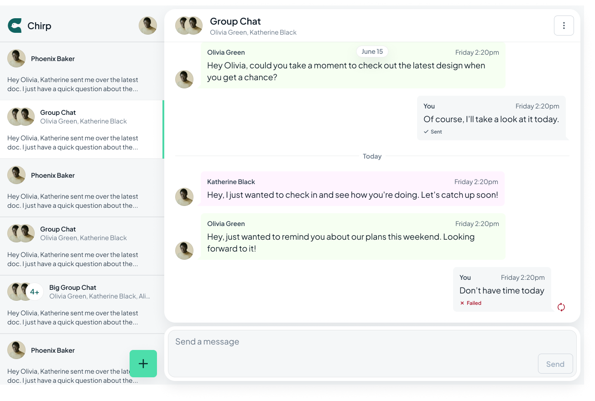
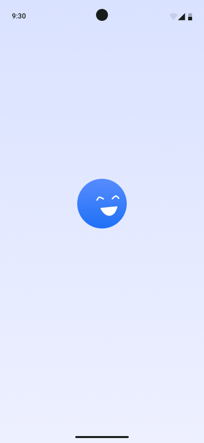
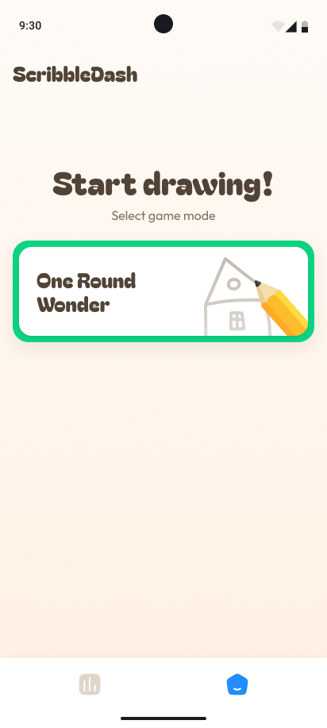

I'm Hussain Gaddal.
I engineer resilient, scalable mobile applications, bridging the gap between comprehensive backend architecture and pixel-perfect native UI with Kotlin Multiplatform.
Based in Riyadh at Kay Technology, I orchestrate the development of large-scale, multi-module Android applications. My methodology roots itself in Clean Architecture, Unidirectional Data Flow (MVI/MVVM), and rigorous testing.
My current focus is heavily invested in pushing the boundaries of Compose Multiplatform (CMP) and building resilient backend services using Ktor, bridging the gap between full-stack capability and native mobile performance.
Beyond the IDE, I spend my time exploring 3D Printing, diving into tech-centric podcasts, and continuously refining my software craftsmanship.
class HussainGaddal : SeniorAndroidDeveloper() {
val location = "Riyadh, SA"
val experience = 4
fun techStack() = listOf(
"Kotlin",
"Jetpack Compose",
"Kotlin Multiplatform",
"Clean Architecture"
)
fun buildFeatures() {
/* Deploy scalable code */
}
}A professional journey focused on building scalable mobile solutions.
Completed a comprehensive engineering program, building a strong foundation in systems thinking, problem-solving, and analytical skills that directly translates to architecting robust software systems.

A full-stack, cross-platform messaging client targeting Android, iOS, and Desktop built entirely with Kotlin Multiplatform.
Advanced running tracker syncing mobile and smartwatch.
Digital library platform with robust PDF management for institutions.

Material Design 3 audio journaling app with mood tagging.
Streamlined blood donation coordination and bank locator.

A highly interactive digital canvas drawing app exploring raw Android UI drawing performance in Jetpack Compose.
Deep expertise in modern Android development, specializing in Jetpack Compose to build declarative, highly-performant, and pixel-perfect native user interfaces.
Architecting scalable apps utilizing Clean Architecture, MVI/MVVM, and Multi-Module structuring. Proven track record of successfully migrating legacy Java codebases to modern Kotlin paradigms.
Pushing boundaries with Compose Multiplatform and Kotlin Multiplatform to maximize code-sharing across Android, iOS, and Desktop without sacrificing native performance.
Mastery of local and remote data layers including Room databases, complex nested historical views, real-time Firestore syncs, and advanced pagination techniques.
Ensuring stability through extensive memory-leak auditing, offline-first syncing, secure DI via Koin, and automating safe release pipelines using Bitrise CI/CD.
Around 1 year of hands-on experience building Server-side Kotlin applications. Currently focused on Spring Boot with PostgreSQL & Redis, while maintaining lightweight Ktor microservices and handling duplex WebSockets for real-time synchronization.
Continuous learning is my primary tool for solving complex problems.
Completed advanced industry-level tracks for Desktop, Android, & iOS created in official collaboration with JetBrains.
Pl-Coding | 2025
Official JetBrains partnered course on scalable server-side Kotlin architecture and database management.
Pl-Coding | 2025
Comprehensive training on production-grade Android development patterns including multi-module architecture and CI/CD.
Pl-Coding | 2024
Advanced Wear OS development including Health Services API, Tiles, and cross-device synchronization.
Pl-Coding | 2024
Mastered testing strategies across decoupled module layers using JUnit, MockK, and robust assertion frameworks.
Pl-Coding | 2024
Automated build, test, and deployment pipelines with Bitrise for continuous integration and delivery.
Pl-Coding | 2022
Comprehensive program cementing core Android SDK principles, lifecycle management, and foundational design patterns.
Udacity | 2022